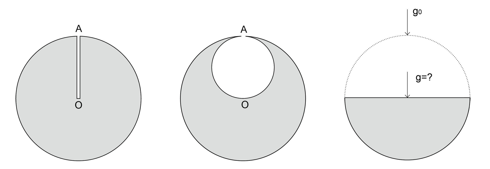
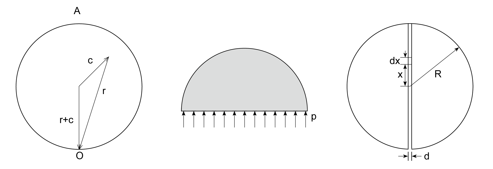

大过年的需要补篇文章来庆祝一下。正好前几天录节目的时候有一个物理题目，虽然THU队伍没有抢到，但这个题很有意思，还有很多引申。大过年的开动脑筋啦，正好也测试下一位IMO学长大神写的LaTex for WordPress的公式插件是否好用：）
问题：
问1：地球如果是球对称的，地球表面和地下100km处，哪个地方的重力加速度较大？地球平均密度5500kg/m3，地壳密度3000kg/m3。（地壳厚度可认为至少为100km。）
问2（图1左、中两图）：宇宙事件测试学会给它的一个专家发送了一份简报：
一艘噬钛的小绿人的宇宙飞船发现了一个完全呈球形的小行星。从小行星的表面上A点到其中心O点，他们钻了一个很窄的试验用的矿井，从而证明了整个小行星由均匀的钛组成。在表面上那一点，突然一个小绿人从小行星表面掉进了试验井里，一直到达O点，在那儿他因为撞击而死去了。
工作仍然继续，小绿人们秘密采钛金属，他们在小行星的内部形成了一个直径为AO的球形腔。第二个小绿人不小心从A点掉到O点，挂了。
宇宙事件测试学会要求专家计算撞击速度比值，及两个小绿人从A点掉到O点所用时间的比值。
问3（图1右图）：上问中小绿人们继续开采，不久小行星的一半被开采光了，仅留了一个规则的半球体。如果原来的球形小行星表面重力加速度为g0=9.81cm/s2，请问余下的半球的圆形表面的中心位置的重力加速度是多大？
问4：小绿人们发现了另一个质量均匀分面、半径为10km的钛金属小行星。它们开始开采，并将采到的矿运到小行星表面。小绿人绕小行星的赤道钻了一个宽度为1m的矿井，它们通过这个井来开采，直到它们将小行星完全切割成了两半。然后事故发生了，将小行星分成两个半球的支柱断裂了，小行星塌了下来。宇宙事件测试学会专家们要计算在小行星坍塌前，作用在支柱上的总作用力是多少？
（以上四问选自《200道物理学难题》200 Puzzling Physics Problems, Peter Gnadig, Gyula Honyek, Ken RiLey, 北京理工大学出版社，2005年）

图1： 对应问题1-3
提示：
问题1：质量均匀分布的薄球壳在其内部产生的重力场为零（类似电磁学中的高斯定理），而在球壳外部的重力场分布，同把球壳总质量认为集中在球心时的情况相同。
问题2：均匀球体内部的重力场与球半径成正比。本题可用叠加法，构想一个负质量的球体。
问题3：将半球分成等厚半球壳，证明这些球壳的每一个都在所求位置产生相同的重力场。

图2：左，问题2解；中，问题3解；右，问题4解
解答：
问题1：
质量均匀分布的薄球壳在其内部产生的重力场为零（类似电磁学中的高斯定理），而在球壳外部的重力场分布，同把球壳总质量认为集中在球心时的情况相同。
厚度为100km的球壳对应半径为6400km的地球总体积的4.6%，但其质量只占地球总质量的2.5%。重力加速度可用 ($g=\frac{GM}{r^2}$) 来计算，其中M是位于半径r处内部的质量。在地表下100km深度，对重力加速度有贡献的地球的那一部分质量为0.975M，半径为0.984r。将上面的数据代入前式可得地表下100km处的重力加速度比地表处大0.7%。
更一般的情况，可证，如果地壳密度不超过地球平均密度的三分之二，那么在地壳内越接近地心，重力加速度越大。
问题2：
小行星密度设为$\rho$，半径为R。半径为r处的重力加速度为：
$$g(r)=G\frac{m(r)}{r^{2}}=G\frac{(4⁄3)\pi r^{3}\rho}{r^{2}}=\frac{4\pi G\rho}{3}r$$
因此，重力加速度是与小行星的中心距离成比例的，并且总指向地心。这意味着小绿人的运动是简谐振动（振幅为R），并且经过第一个四分之一周期后撞到地心。下落时间为：
$$T_1=\frac{T}{4}=\frac{1}{4}\sqrt{\frac{3\pi}{G\rho}}$$
速度为：
$$v_1=R\omega=2R\sqrt{\frac{\pi G\rho}{3}}$$
第二个事件发生时，我们可以用叠加法：球形由充满钛金属的大球与被挖空的负质量的球组成。对于任意一点，大球引力矢量r指向大球球心，小球引力矢量c从小球球心指向此点。引力矢量叠加后r+c，为一常量，且从小球球心指向大球球心。意味这腔体内是一个均匀的重力场，与位置无关。
$$g=-\frac{\omega ^2 R}{2}$$
第二个小绿人下落的时间和速度可由匀加速运动方程得到：
$$T_2=\frac{2}{\omega}=\sqrt{\frac{3}{\pi G\rho}}$$
$$v_2=2R\sqrt{\frac{\pi G\rho}{3}}$$
两个事件给出的比值应该为：
$$\frac{T_1}{T_2}=\frac{\pi}{4}$$
$$\frac{v_1}{v_2}=1$$
可以看出第二个小绿人下落时间比第一个长，但两者以相同的速度撞到地心。这不是偶然。因为动能由重力势能转化而来，第二例中等效大小球势能叠加，小绿人从A到O的过程中正好从负引力的小球的一个表面到了另一个表面，小球引起的势能没有减少，只有大球引起了势能的变化，所以两个小绿人的势能变化相同。
另可以证明，在均匀球体任意两点打一个贯通的洞（不一定穿过地心），小绿人在洞里都是简谐振动，而且周期完全相同。（见赵凯华《力学》）
问题3：
设半球被分成许多个同心且厚度相同的半球壳。因为一个球壳的质量与其半径的平方成正比，而产生的作用力又与半径平方成反比，所以不同半球壳在中心处产生的重力加速度是相等的。如果有n个半球壳，那么最外层半球壳的质量为 2πR2(Rn)ρ ，其中R为小行星的半径， ρ 为小行星密度。由半球体产生的总重力场是由最外层半球壳产生的重力场的n倍（因为每层产生的都相同），也就是说，这个半球的引力场等效于把质量 M=2πR3ρ 集中在最外层球壳上。这个质量是实际半球体质量的三倍。
质量为M的半球壳作用力如何呢？单位表面积上作用力为：
$$p=G\frac{\frac{M}{2\pi R^2}}{R^2}=G\frac\rho R$$
将这个作用力沿半球壳积分，可以类比与一种液体以压强p作用在同样的半球壳上时，求作用力。因为液体作用在完整半球体上的合力为零，所以液体在半球体曲面上的总作用力大小相等。（图2中间）
$$g=p\pi R^2=G\rho R\pi$$
小行星表面的初始重力加速度为：
$$g_0=G\frac{4\pi R^3}{3}\rho\frac{1}{R^2}$$
从上面计算可得到:
$$g=\frac{3}{4}g_0=7.36cm/s^2$$
已知钛的密度，可确定小行星原来的半径约为78km。
问题4（图2右）：
当球体被分开时，系统重力势能增加。由于重力势能增加W有同样的值。当小绿人将原来位于半径为R，厚度为d的圆盘内的金属钛运到表面上时，通过计算小绿人所做的功就可以计算出重力势能的增量。
如果g表示质量为M的行星表面的重力加速度，那么距离中心为x处的重力加速度为 g(x)=xg/R 。小行星密度可表示为 ρ=3M/(4πR3) 。考虑原来位于半径为 x 和 x+Δx 之间的钛金属，它的体积为 ΔV=d2πxΔx ，质量为 Δm=ρΔV 。金属全被从同样深度运上去。在原位置有一个力 Δmgx/R 作用在它们上面，同时在小行星表面上的力为 Δmg 。当小行星的内部向表面运动时，重力场单调增加，所以可用初始作用力和最终作用力的算数平均值。总位移是 R−x ，因此做的功是：
$$\Delta W=\Delta mg\frac{1+(x/R)}{2}(R-x)=\Delta mg\frac{R^2-x^2}{2R}=\frac34\frac{Mgd}{R^4}(R^2-x^2)x\Delta x$$
积分可得：
$$ W=\frac34\frac{Mgd}{R^4}\sum (R^2-x^2)x\Delta x=\frac34\frac{Mgd}{R^4}\int_{0}^{R}(R^2-x^2)xdx=\frac{3}{16}Mgd $$
作用力:
$$F=\frac{W}{d}=\frac{3Mg}{16}=\frac{3}{16}M\frac{GM}{R^2}=\frac{3}{16}(\frac{4\pi R^3\rho}{3})^2\frac{G}{R^2}=\frac{GR^4\rho^2\pi^2}{3}\approx 4.5X10^{13}N$$
如果有浏览器显示公式有问题，可以试试Chrome。
春节快乐！